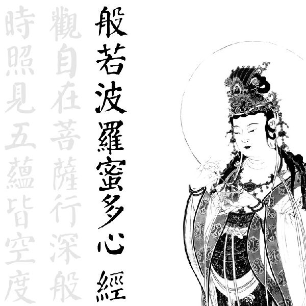
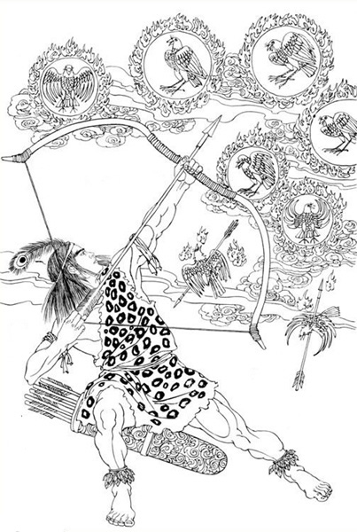

昆仑史曲
七，射下九宫
地球淨土最麻煩的一件事就是，若想獲人身，必行投胎之路，但一投胎，能量就喪失，而無法穿越奇點（斷魂關）返回多維時空（九天）。 另一弊端是，地球的時間速度極快，轉眼就是萬千年，生生死死息息不止，永遠處於這種變化無常之中，不如九天那樣寧靜、有常、 如如不動。
妙善為大羅金仙王，深感不安。 有心將地球上的眾大羅仙女全部渡回去，但苦於能量喪失而不能重返。 此後，來自九天的一個巨靈玄龍住胎後，為大羅金仙國王太子，名叫羅地干布。 他高興地接了王位，率眾大羅仙在地球上開山闢洞，沿海底下把幾塊陸地全通連起來。 而大羅仙王則出家修行，煉足能量之後返回九天之內。

大羅仙王涅槃之前，傳玄龍“一卷經”，要他率眾大羅仙按此法修行，以返故里。但地球這裡自在好玩，有山有水，真山真景，比那九天的虛無飄渺強萬倍。 故而玄龍也不煉功，也不傳功，只把一卷經扔到九霄雲外。
妙善回九天之後，努力另闢一個極樂世界，準備接迎地球上的眾生。 但無論是如何感召，玄龍只是不理不睬。 妙善眼看一批批大羅仙因轉世不止，造業不斷，能量日趨衰減，一批批地墜入，于是到天后宫，上奏大光明王佛妈祖。妈祖下令：《将该死的罗地干布和大罗金仙全部渡回。》
十妙奉命渡罗地，夜闯断魂关，进入了三界内。大罗仙见到天空出现十个太阳，地球上出现生命大批死亡现象，急呼王太子罗地干布，十妙众又晒又打！玄龙玉帝从海里飞出与罗地干布天人合一。玉帝不但有虹光剑，还有一个震天震地震海的七星链，大战十妙的十大战团。
玉帝把自己的黄绣带取下，系在艳娘额上，又将虹光剑交与艳娘要她假扮玄龙帝；又将第一美玉交与娇芳娘，要她也假扮玉帝，率罗刹阵陈兵东海边的水泽域，罗地干布的七星阵里又暗含八卦阵，阵势之凶，其险无穷……!大日发令找佩玉的人，西洋女王发令抓系黄绣带的人，两位假玄龙交叉变幻作战，害得佛王、西洋女王的十大战团南北交叉乱了阵。正在难解难分之时，突然一声霹雳划破青天，罗地冲上海天，呈现各路阵法，混战中，罗地干布左臂神弓射下九宫！留下圣王大日如来返回天庭，第一次天地大战结束，以地胜天而告终。

九宫被击落后，各自投胎动物身，西洋女王大势至转生大白鲸，玄女九娘转生狐，白娘转生白蛇，青娘转生青蛇，珠王圣母转生鲅鱼等。大日九宫这一晒一打，这一仗共持续了一百二十多天！玄龙也知此事不妙，于是返回大日宫请求大日公主发落，大日佛王将玄龙帝数喽一顿，然后让玉帝将九宫渡回，封佛号燃灯古佛。玄龙玉帝到嫦娥居住的地方，二人洒泪痛别！玉帝下坠！本来是大日九宫渡玄龙与大罗金仙，反成了玉帝渡九宫，幻化成燃灯古佛渡九宫。燃灯古佛渡九宫！燃灯古佛渡九宫！！
“在史前一个时期广泛渡过人”。正是那时玄龙帝渡九宫时也渡过战团将士们，可是谁也不知他是谁！九宫圣母们几经转世，苦苦修行，修成后返回！
| 上 一 頁 | 下 一 頁 | 回 主 頁 |